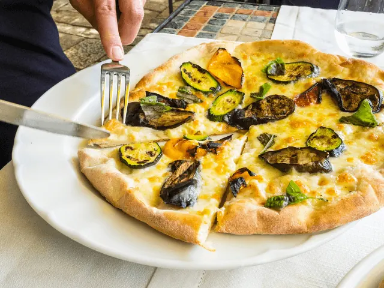
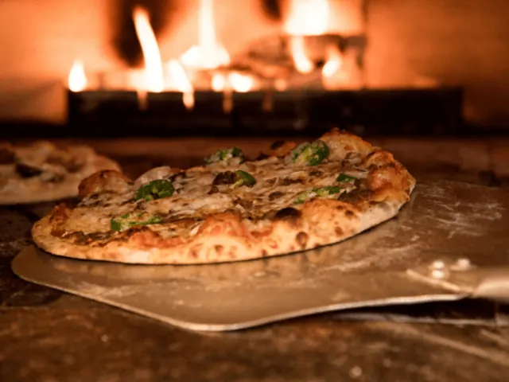
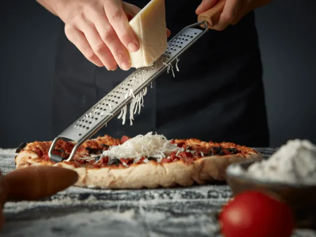

Pizza Liefhebbers? Dit zijn de Beste Pizzeria’s in Nijmegen
Gepubliceerd op 21 februari 2023, bijgewerkt op 20 oktober 2023
Onderdeel van de gids Restaurants in Nijmegen

Een knapperige bodem, heerlijk gesmolten kaas en jouw favoriete toppings; Jij bent zonder twijfel net zo een pizzaliefhebber als de meeste van ons. We zijn in ons land nu eenmaal gek van dit heerlijke Italiaanse hoogstandje. De een gaat voor een simpele margherita en de ander kiest voor een heerlijke pizza shoarma. Waar jouw voorkeur ook naar uitgaat, je bent ongetwijfeld op zoek naar de beste pizzeria bij jou in de buurt. Daarom gingen wij op onderzoek uit. Want wat zijn de beste pizzeria’s in Nijmegen?
De Pizzabakkers en restaurant Donatello’s zijn twee hooggewaardeerde pizzeria’s in Nijmegen. Hier vind je pizza’s van hoge kwaliteit, en je kunt hier bovendien veel andere Italiaanse specialiteiten scoren. Iedereen die op zoek is naar een zuurdesempizza, verwijzen wij graag door naar pizzacafé DESEM. Deze sfeervolle plek zal jou zonder twijfel verrassen.
Alhoewel je met pizza eigenlijk nooit fout kan gaan, zijn er wel degelijk pizzeria’s die hun concurrentie ver overstijgen met ingrediënten van hoge kwaliteit. Daarnaast kun je natuurlijk ook kiezen voor verschillende soorten pizza’s. Kies jij voor de traditionele Italiaanse bodem, of gaat jouw voorkeur uit naar een dikkere bodem? In het onderstaande artikel bespreken we enkele pizza restaurants in Nijmegen die jij absoluut geprobeerd moet hebben. Daar zul je geen spijt van krijgen!
Overzicht Pizzaria's in NIjmegen
Eet hier de lekkerste pizza’s van Nijmegen
Maak jij binnenkort een stedentrip naar Nijmegen? Of wellicht woon je simpelweg in de buurt van deze bruisende stad? Hoe het ook zij, wanneer je in Nijmegen bent mag een bezoekje aan een lekkere pizzeria natuurlijk niet ontbreken. Wij zetten onderstaand enkele restaurants uiteen, waar jij terecht kunt voor de beste pizza’s van Nijmegen.
· De Pizzabakkers in Nijmegen
De Pizzabakkers is onder velen een bekende keten. In diverse grote steden van ons land vind je deze pizzeria terug, zo ook in Nijmegen. Deze eetgelegenheid is gevestigd in het centrum van Nijmegen, en zodoende de ideale plek om na een dagje cultuur snuiven te genieten van een rijk belegde pizza.
Dit restaurant kenmerkt zich met een heerlijk huiskamergevoel. De gemoedelijke sfeer maakt het een toegankelijke ontmoetingsplek voor iedereen. Ook het uitgebreide menu kan gehoor geven aan ieders wensen. Zelfs veganisten kunnen hier genieten van een heerlijke pizza, dat is absoluut uniek!
Naast de meest uiteenlopende pizza’s, vind je op de menukaart uiteraard ook veel andere Italiaanse specialiteiten. Een bruchetta vooraf of een tiramisu als dessert mogen natuurlijk niet ontbreken, om slechts twee populaire voorbeelden te noemen.
Ben jij op zoek naar een gezellig restaurant in het centrum van Nijmegen, waar je kunt genieten van pizza’s van topkwaliteit? Bezoek dan de Pizzabakkers in hartje Nijmegen.

· Donatello’s
In de Eerste Walstraat in het centrum van Nijmegen vind je restaurant Donatello’s. De naam doet al vermoeden dat we hier te maken hebben met een traditioneel Italiaans restaurant. Het betreft een uitermate sfeervol restaurant, waar gasten al meer dan 25 jaar vertrouwen op de lekkerste pizza’s.
Donatello’s is populair onder velen, en is een uitermate drukbezocht restaurant. De menukaart laat dan ook niets te wensen over. Alle denkbare pizza’s, maar ook diverse pasta’s en zelfs vleesgerechten behoren tot de mogelijkheden. Waar zijn de gasten naast het uitgebreide menu nog meer over te spreken?
- Snelle service
- Vriendelijk personeel
- Goede prijzen
- Ook grote gezelschappen zijn welkom
- Uitermate sfeervolle eetgelegenheid
Wil jij deze unieke kenmerken van restaurant Donatello’s zelf ervaren? Wacht dan niet langer, en ga er langs voor een heerlijke pizza naar keuze.

· Pizzacafé DESEM
Ook pizzacafé DESEM is wederom gevestigd in het centrum van Nijmegen. We kunnen dus wel concluderen dat er in hartje Nijmegen in ieder geval geen gebrek is aan goed pizzeria’s. De naam zegt het eigenlijk al, bij pizzacafé DESEM kun je genieten van zuurdesempizza’s. Deze worden gemaakt van lokale granen, en zullen jouw smaakpapillen zonder twijfel verrassen.
Pizzacafé DESEM is een sfeervol restaurant waar je op bourgondische wijze kunt genieten van de lekkerste Italiaanse pizza’s. Maar ook de meest unieke wijnen en desserts ontbreken niet op de uitgebreide menukaart. Alle gerechten worden gemaakt van de meest hoogwaardige ingrediënten, en dat proef je!
Met de hele familie komen eten bij DESEM of lekker afhalen en thuis genieten? Het kan allemaal. Onderstaand een greep uit de meningen van gasten die dit unieke pizza restaurant hebben bezocht.
- Fantastische service
- Unieke sfeerbeleving
- Creatieve pizza’s
- Verrassende smaakcombinaties
- Heerlijke drankjes
Ben jij inmiddels ook nieuwsgierig geworden naar dit veelzijdige pizzacafé? Dat begrijpen wij maar al te goed. Wij raden je zonder twijfel aan om de unieke sfeer en bijzondere smaakcombinaties zelf uit te proberen.

MEER RESTAURANT INSPIRATIE NODIG?
restaurants in nijmegenSnackbars en afhaal in Nijmegen
Zin om te beginnen? In onze bedrijvengids vind je alle 99 snackbars in Nijmegen, met openingstijden, kenmerken en een kaart.
Bekijk alle 99 snackbars in Nijmegen
Heb je zelf een snackbar? Laat je hier uitlichten.